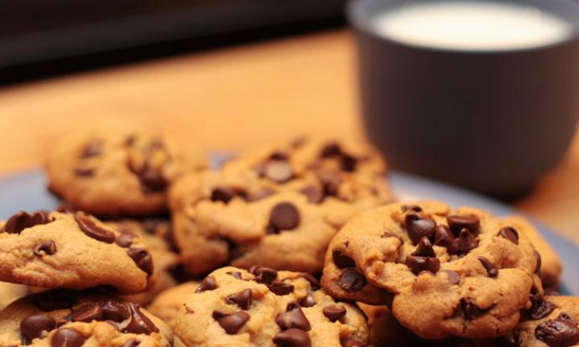

Snack Recipes

Red Pepper Houmous
Bircher
Chocolate Truffle
Snack foods are often foods that are processed and high in calories. However, what people do not realise, snacking is simply the process of eating/drinking in between major meals.
We offer great choices of different snacks for you to try, whether you're looking for healthy snacks or for just general snacks which you can pluck off the counter.
Keep in mind, Do not Snack too much as often snacking large amounts will make us less likely to eat the next major meal, whether it be lunch or dinner, and both of these meals are incredibly important/